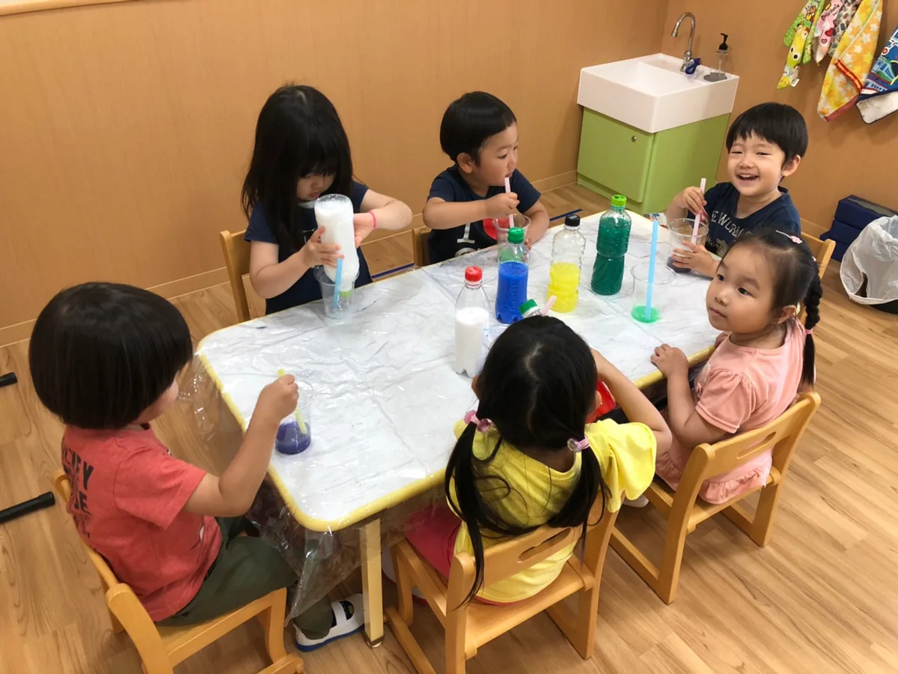
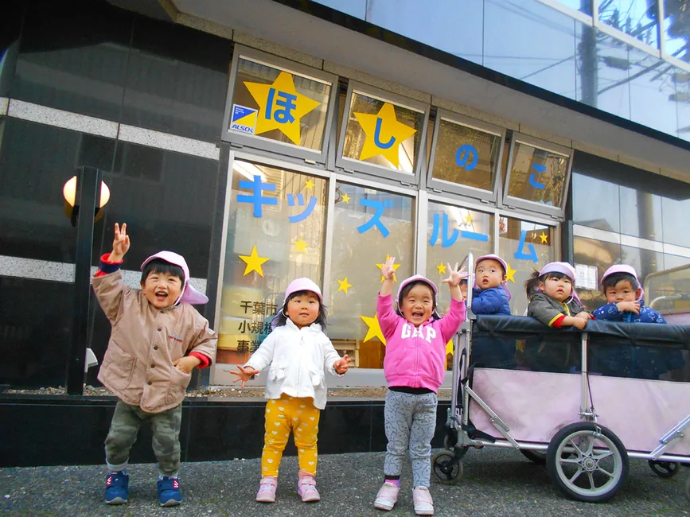
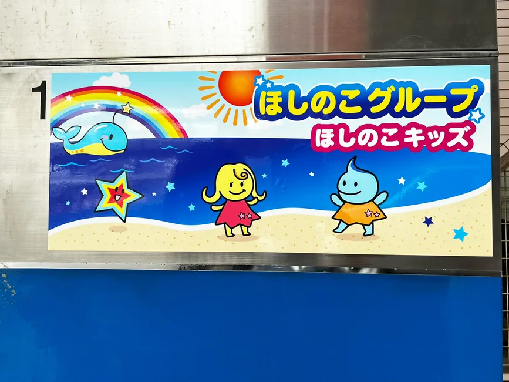
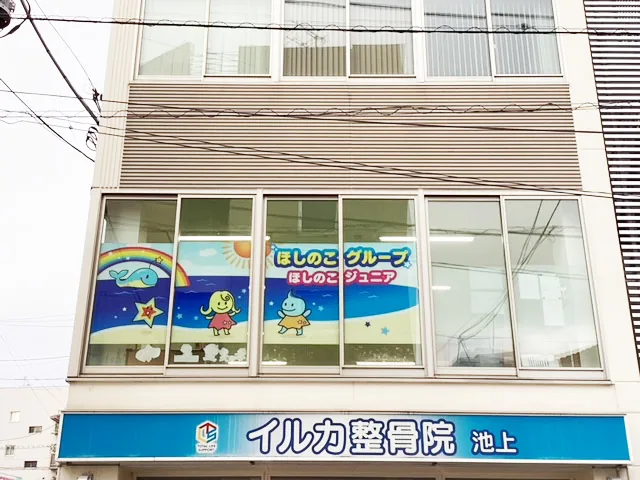
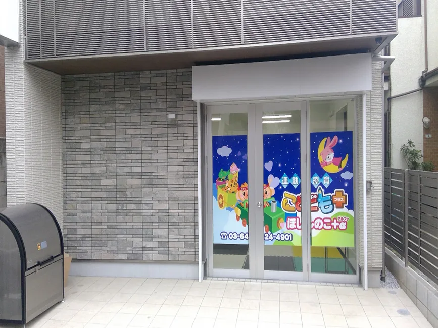
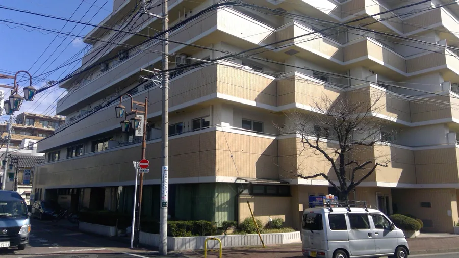
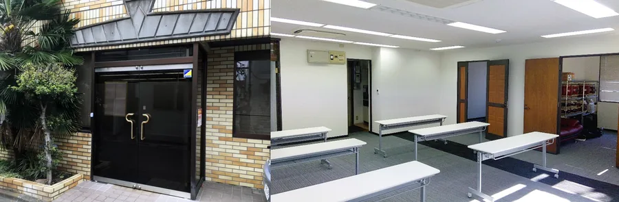
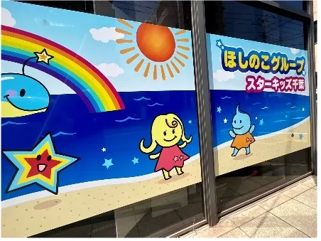

千葉市認可保育園
千葉市認可保育園ほしのこ保育園
- 対象
- 保育を必要とするお子さま
- 所在地
- 〒260-0027 千葉県千葉市中央区新田町23-16 K-16ビル2階
- 電話番号
- 043-441-3804
Facilities
探している事業から、対象施設へ進めます。保育園、児童デイサービス、日中一時支援、居宅介護・移動支援をカテゴリ別に整理しました。

保育園
保育を必要とするお子さまを対象とした、千葉市・川崎市の保育施設です。
千葉市認可保育園
千葉市小規模保育事業児童デイサービス
児童発達支援・放課後等デイサービスの事業所を、対象・所在地・電話番号とあわせて確認できます。
 東京都指定放課後等デイサービス・東京都指定児童発達支援
東京都指定放課後等デイサービス・東京都指定児童発達支援
東京都指定児童発達支援
東京都指定児童発達支援
東京都指定放課後等デイサービス
東京都指定放課後等デイサービス・東京都指定児童発達支援
東京都指定放課後等デイサービス
千葉市指定児童発達支援事業及び放課後等デイサービス事業日中一時支援
特別支援学校小学部のお子さまが、放課後や長期休暇に安心して過ごせる居場所です。
 渋谷区障がい児保育型日中一時支援事業
渋谷区障がい児保育型日中一時支援事業居宅介護・移動支援
生活支援・外出支援を必要とする方へ、居宅介護・重度訪問介護・移動支援を行います。
 居宅介護・重度訪問介護・移動支援
居宅介護・重度訪問介護・移動支援Contact
対象や利用条件はサービス・施設により異なります。分かる範囲から丁寧にご案内します。